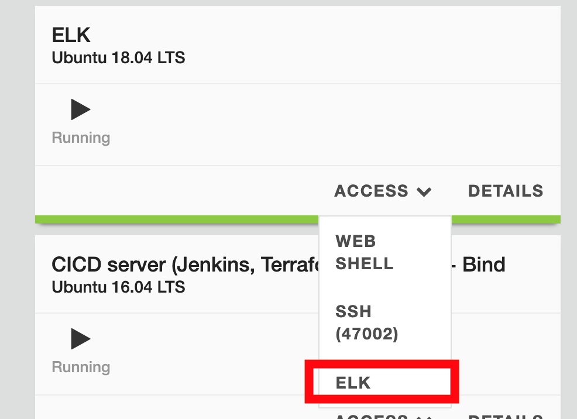
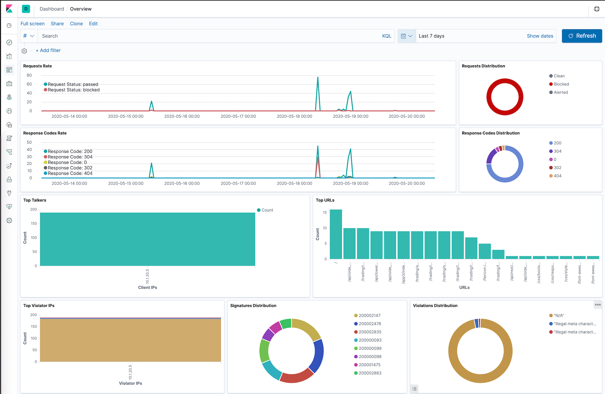

Step 5 - Check logs in Kibana¶
In this module, we will check the logs in ELK (Elastic, Logstash, Kibana)
Check how logs are sent and how to set the destination syslog server
Steps:
SSH to Docker App Protect + Docker repo VM
In
/home/ubuntu(the default home folder), list the filesls -alYou can see 2 files
log-default.jsonandnginx.confOpen log-default.json
less log-default.json. You will notice we log all requests.{ "filter": { "request_type": "all" }, "content": { "format": "default", "max_request_size": "any", "max_message_size": "5k" } }Open nginx.conf
less nginx.confuser nginx; worker_processes 1; load_module modules/ngx_http_app_protect_module.so; error_log /var/log/nginx/error.log debug; events { worker_connections 1024; } http { include /etc/nginx/mime.types; default_type application/octet-stream; sendfile on; keepalive_timeout 65; server { listen 80; server_name localhost; proxy_http_version 1.1; app_protect_enable on; app_protect_security_log_enable on; app_protect_security_log "/etc/nginx/log-default.json" syslog:server=10.1.20.6:5144; location / { resolver 10.1.1.9; resolver_timeout 5s; client_max_body_size 0; default_type text/html; proxy_pass http://k8s.arcadia-finance.io:30274$request_uri; } } }
Note
You will notice in the nginx.conf file the refererence to log-default.json and the remote syslog server (ELK) 10.1.20.6:5144
Open Kibana in the Jumphost or via UDF access
Steps:
In UDF, find the ELK VM and click Access > ELK

{kind=link}
In Kibana, click on
Dashboard > Overview
{kind=link}
- At the bottom of the dashboard, you can see the logs. Select one of the log entries and check the content
Note
You may notice the log content is similar to ASM and Adv. WAF
Note
The default time window in this Kibana dashboard is Last 15 minutes. If you do not see any requests, you may need to extend the time window to a larger setting